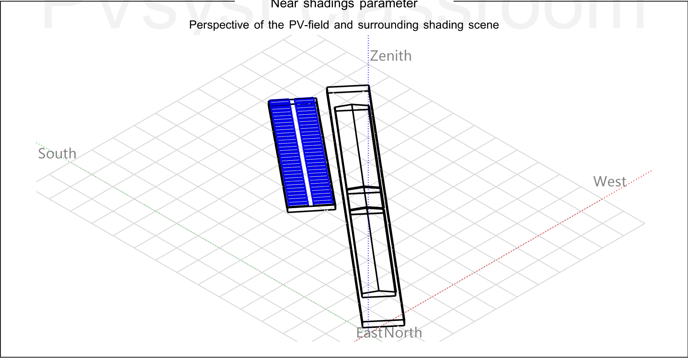
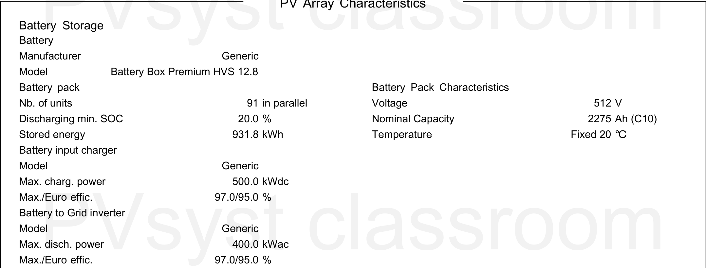
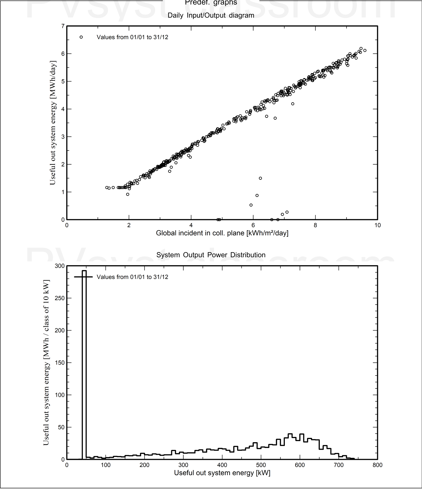
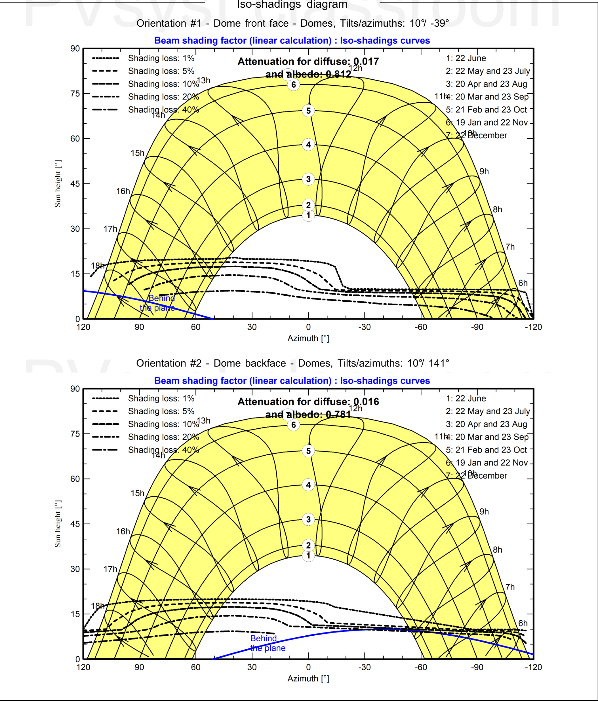
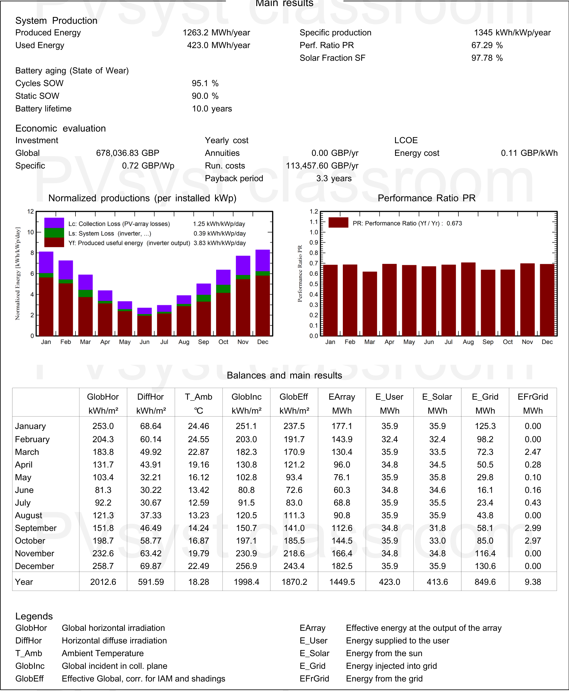
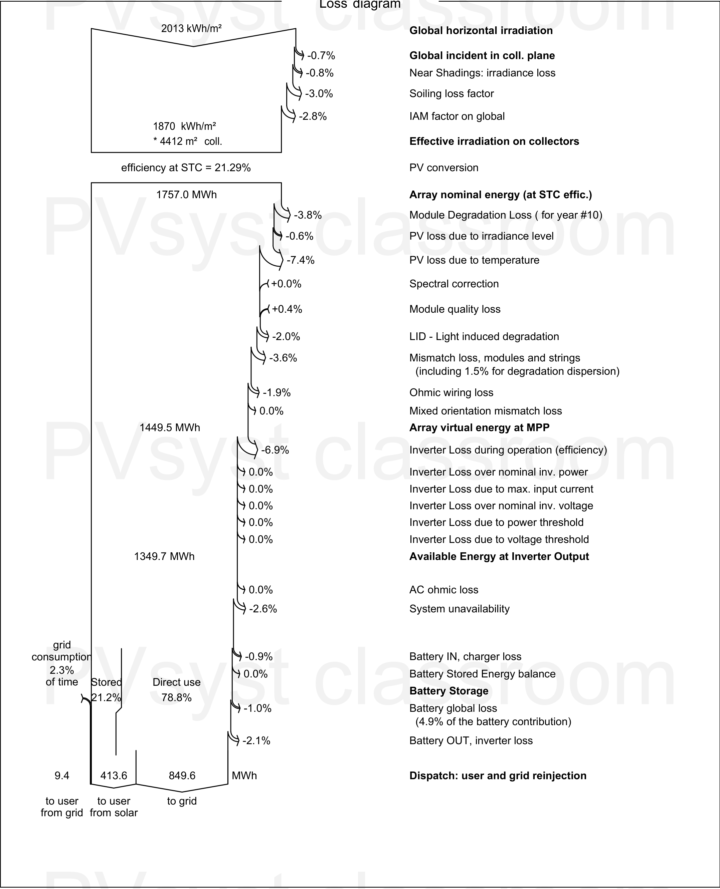
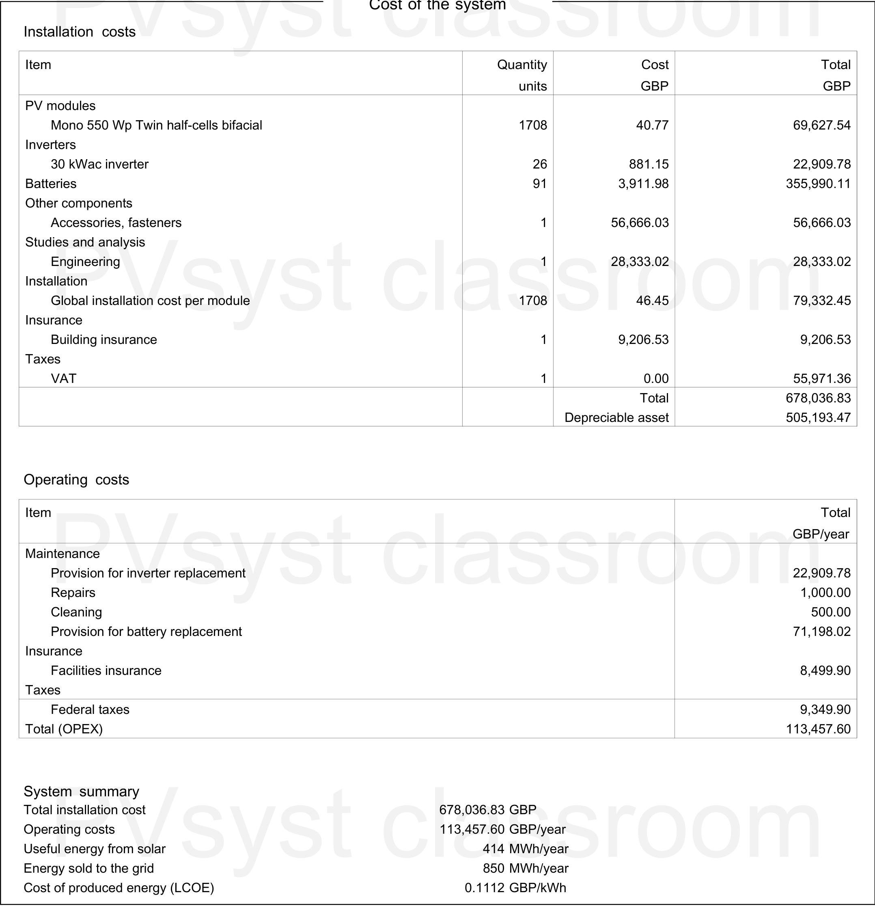

项目概览（Situation, Task, Action, Result, STAR）Project Overview (STAR)
- Situation
- 课程要求四人小组比较英国南安普敦（Southampton）与澳大利亚珀斯（Perth）的并网光伏系统，覆盖住宅屋顶和港口商业场景，并从太阳能资源、工程配置、经济性和减排效果进行评价。 The course required a four-person team to compare grid-connected PV systems in Southampton, UK and Perth, Australia, across residential rooftop and commercial port scenarios, considering solar resource, engineering design, economics and carbon savings.
- Task
- 我负责珀斯太阳能资源分析和弗里曼特尔港大型光伏储能系统（Photovoltaic and Battery Energy Storage System, PV-BESS）方案，需要把港口用电目标、屋顶面积、气象数据和电价假设转化为可在光伏仿真软件（PVsyst）中验证的工程模型。 I was responsible for the Perth solar resource analysis and the Fremantle Harbour PV-BESS design, converting port load targets, roof area, weather data and tariff assumptions into an engineering model that could be validated in PVsyst.
- Action
- 完成负荷目标推算、550 Wp 双面半片组件选型、26 台 30 kW 串型逆变器配置、电池储能系统（Battery Energy Storage System, BESS）容量计算、三维（3D）场景建模、近端遮挡和系统损失分析，并建立 20 年财务模型。 I estimated the design load target, selected 550 Wp bifacial half-cell modules, configured 26 x 30 kW string inverters, sized the BESS, built the 3D scene, analysed near-shading and system losses, and prepared a 20-year financial model.
- Result
- 形成 939 kWp 光伏阵列、931.8 kWh 可用储能容量和 1.20 直流/交流容量比（Direct Current/Alternating Current ratio, DC/AC ratio）的方案；仿真年发电量 1263.2 MWh，性能比（Performance Ratio, PR）67.29%，平准化度电成本（Levelized Cost of Energy, LCOE）£0.1112/kWh，投资回收期 3.3 年，内部收益率（Internal Rate of Return, IRR）30.83%。 The final design used a 939 kWp PV array, 931.8 kWh usable storage and a 1.20 DC/AC ratio. Simulated annual production was 1263.2 MWh, with 67.29% PR, £0.1112/kWh LCOE, 3.3-year payback and 30.83% IRR.
项目边界Project Boundary
- 地点：澳大利亚西澳州弗里曼特尔港客运站前停车场屋顶，报告坐标约为 32°02'54"S, 115°44'50"E。Location: car-park roof in front of the Fremantle passenger station, Western Australia, with report coordinates around 32°02'54"S, 115°44'50"E.
- 目标：围绕港口商业负荷设计并网光伏与储能方案，而不是完整港口微电网控制系统。Goal: design a grid-connected PV and storage solution for a commercial harbour load, not a full port microgrid control system.
- 仿真：使用光伏仿真软件（PVsyst）和气象数据库（Meteonorm 8.2）数据，重点评估发电量、损失链、性能比和财务可行性。Simulation: PVsyst with Meteonorm 8.2 weather data, focused on energy yield, loss chain, performance ratio and financial feasibility.
- 项目输出：形成可复核的光伏储能系统方案，包含容量配置、三维建模、损失分析、成本模型和经济性评价。Project output: a reviewable PV-BESS design covering sizing, 3D modelling, loss analysis, cost modelling and economic evaluation.
容量配置与设计逻辑Sizing and Design Logic
| 需求推算Demand Estimate | 根据报告使用的港口能耗数据，836 MWh/year 约对应 Victoria Quay 15% 用电；若覆盖 50%，目标电量约为 2786.67 MWh/year。Using the port energy data adopted in the report, 836 MWh/year corresponds to about 15% of Victoria Quay demand; a 50% target implies about 2786.67 MWh/year. |
|---|---|
| 光伏阵列PV Array | 1708 块 550 Wp 双面半片组件，总容量约 939 kWp，阵列面积约 4412 m²。1708 x 550 Wp bifacial half-cell modules, giving about 939 kWp and roughly 4412 m² array area. |
| 逆变器Inverters | 26 台 30 kWac 串型逆变器，总交流侧容量 780 kWac；直流/交流容量比约 1.20，用于提高逆变器利用率，并接受少量高辐照时段削峰风险。26 x 30 kWac string inverters, giving 780 kWac. The DC/AC ratio is about 1.20, increasing inverter utilisation while accepting limited clipping risk during high-irradiance periods. |
| 储能Battery Storage | 采用 BYD Battery Box Premium HVS 12.8 参数：512 V、25 Ah，91 个单元并联，理想容量 1164.8 kWh；按最低荷电状态（State of Charge, SOC）20% 计算，可用容量约 931.8 kWh。Based on BYD Battery Box Premium HVS 12.8 parameters: 512 V, 25 Ah and 91 units in parallel. Ideal capacity is 1164.8 kWh; with 20% minimum SOC, usable energy is about 931.8 kWh. |
| 布局Layout | 采用东西双拱（East-West Dome）低倾角行排，两个方位角约为 -39° 和 +141°，目的是提升早晚发电、降低行间遮挡并适配大面积平屋顶。An east-west dome low-tilt row layout was used, with azimuths around -39° and +141°, to improve morning/evening generation, reduce row-to-row shading and suit a large flat roof. |
成本模型、电价假设与度电成本Cost Model, Tariff Assumptions and LCOE
报告中的成本来自光伏仿真软件（PVsyst）成本页和公开市场价格估算，适合课程级技术经济分析。真实工程报价仍需由组件、电池、逆变器、结构、施工和并网供应商重新询价。 The cost model comes from the PVsyst cost page and public market price estimates. It is suitable for course-level techno-economic analysis; real deployment would still require supplier quotations for modules, batteries, inverters, structures, installation and grid connection.
| 组件成本PV Modules | 1708 块 Mono 550 Wp 双面半片组件，单价 £40.77，总计 £69,627.54。1708 Mono 550 Wp bifacial half-cell modules at £40.77 each, total £69,627.54. |
|---|---|
| 逆变器成本Inverters | 26 台 30 kWac 逆变器，单价 £881.15，总计 £22,909.78。26 x 30 kWac inverters at £881.15 each, total £22,909.78. |
| 电池成本Batteries | 91 个 BYD Battery Box Premium HVS 12.8 电池单元，单价 £3,911.98，总计 £355,990.11，是安装成本中最大单项。91 BYD Battery Box Premium HVS 12.8 battery units at £3,911.98 each, total £355,990.11, the largest single installation-cost item. |
| 工程与安装Engineering and Installation | 附件与紧固件 £56,666.03；工程研究与分析 £28,333.02；全局安装成本 £79,332.45。Accessories and fasteners £56,666.03; engineering studies and analysis £28,333.02; global installation cost £79,332.45. |
| 保险与税费Insurance and Tax | 建筑保险 £9,206.53；澳大利亚商品及服务税（Goods and Services Tax，GST，税率 10%）£55,971.36。Building insurance £9,206.53; Australian Goods and Services Tax (GST, 10%) £55,971.36. |
| 总安装投资Total Installation Cost | 总安装成本 £678,036.83；其中可折旧资产 £505,193.47。Total installation cost £678,036.83; depreciable asset £505,193.47. |
设计细节Design Details
关键工程参数说明Key Engineering Parameters
以下内容补充说明电池、成本、电价、度电成本和系统布局等关键参数，帮助读者理解方案的工程依据和经济假设。 The notes below explain key assumptions for the battery system, cost model, tariffs, LCOE and layout, helping readers understand the engineering basis and economic assumptions behind the design.
电池具体用了什么型号？容量是怎么来的？Which battery model was used, and how was capacity calculated?
为什么电池成本这么高？它在总投资里占多少？Why is the battery cost high, and how important is it in CAPEX?
度电成本是怎么计算的？为什么不能直接用投资除以年发电量？How was LCOE calculated, and why is it not just CAPEX divided by annual generation?
项目使用了什么电价？收益是按什么逻辑来的？Which tariffs were used, and how was revenue interpreted?
为什么直流/交流容量比选 1.20？Why was the DC/AC ratio set to 1.20?
为什么采用东西双拱布局，而不是单一朝向？Why use an east-west dome layout instead of one direction?
仿真证据Simulation Evidence
场地、建模与损失结果 Site, Model and Loss Evidence
以下图示用于支撑项目叙述：从港口场地、三维建模、单线配置到遮挡和发电性能，均对应报告中的关键工程判断。 These visuals support the case narrative: site selection, 3D modelling, single-line configuration, shading and production performance all correspond to key engineering decisions in the report.






